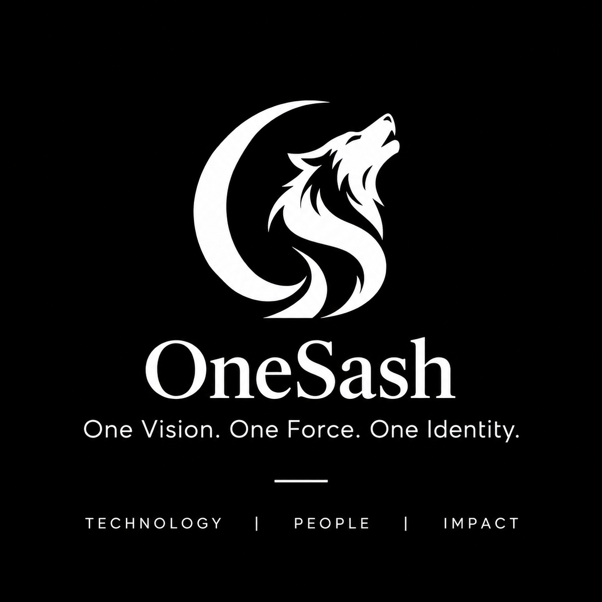

Clarity before complexity
We focus on understanding the problem before choosing the technology.

OneSashTECHNOLOGY / PEOPLE / IMPACTLet’s Talk ↗INDEPENDENT SOFTWARE & TECHNOLOGY STUDIO
From ambitious startup ideas to powerful digital platforms, OneSash designs and develops websites, applications, and software solutions that turn complex challenges into meaningful digital experiences.
STRATEGY / DESIGN / DEVELOPMENT
OneSash brings technology, design, and practical thinking together to create digital solutions that serve a clear purpose.
We work with businesses, founders, and ambitious teams to transform ideas into functional, thoughtfully designed digital products. Our approach combines careful planning, modern engineering, and attention to the details that shape the user experience.
We focus on understanding the problem before choosing the technology.
Every interaction, screen, and feature should have a reason to exist.
We consider maintainability and future growth from the beginning.
From the first concept to the final deployment, we help turn digital requirements into working solutions.
Responsive business websites, distinctive brand experiences, and custom web platforms designed for performance and usability.
Tailored software solutions that simplify operations, automate workflows, and address specific business requirements.
Interactive dashboards, management systems, customer portals, and scalable web applications.
User-focused mobile applications built around real needs, intuitive interfaces, and reliable functionality.
Research-informed interfaces, thoughtful user journeys, wireframes, prototypes, and cohesive design systems.
Practical guidance on product planning, technology choices, system architecture, and development strategy.
A closer look at the thinking, design, and development behind our digital work.
Selected work is taking shape. We’ll share real projects and the thinking behind them here.
Let’s talk about your project ↗Good digital products are built through thoughtful decisions, clear communication, and careful execution. Our process keeps every stage focused on what matters.
Understanding the business, the users, and the problem worth solving.
Small teams
FIRST RELEASEProjects, priorities, and ownership
WIREFRAME → VISUAL SYSTEM → INTERFACE
export function ProjectList({ projects }) {const active = projects.filter(p => p.status === 'active');return <ul>{active.map(p =><li key={p.id}>{p.name}</li>)}</ul>;}
2 projects match the component filter.
Your work, brought together.
Understanding the business, the users, and the problem worth solving.
Goals / users / opportunitySmall teams
FIRST RELEASEProjects, priorities, and ownership
Turning requirements into clear experiences, intuitive interfaces, and a practical product direction.
Journeys / structure / interactionWIREFRAME → VISUAL SYSTEM → INTERFACE
Building the solution through structured engineering, integration, and continuous refinement.
Engineering / integration / refinementexport function ProjectList({ projects }) {const active = projects.filter(p => p.status === 'active');return <ul>{active.map(p =><li key={p.id}>{p.name}</li>)}</ul>;}
2 projects match the component filter.
Testing, launching, and preparing the product for its next stage.
Testing / launch / evolutionYour work, brought together.
Technology alone doesn’t create meaningful experiences. The decisions behind it do.
Understanding the real challenge matters more than simply following a list of requirements.
We connect the business goal to the user need, so the product solves the right problem.
Every interaction and design decision should make the product easier and more meaningful to use.
Clear journeys and deliberate interfaces give people a practical path from intent to action.
Strong foundations make digital products easier to maintain, improve, and expand.
We consider structure, performance, and maintainability while making room for the next iteration.
Clear collaboration brings business thinking, design, and development into the same direction.
Shared context and straightforward communication keep decisions connected throughout the project.
One direction. A shared commitment to building things that matter.
We focus on websites, digital products, applications, and custom software projects. The right approach depends on your requirements.
Yes. An early conversation can help clarify the requirements, possible features, and a practical development direction.
We start by understanding what you want to build, who it is for, and what success should look like.
Project pricing depends on its scope, complexity, integrations, and timeline. Share your requirements to begin a more specific discussion.
Existing products can be reviewed to identify opportunities for improvements in design, functionality, and performance.
Whether you’re starting from scratch, improving an existing product, or exploring a new digital solution, tell us what you have in mind.
Call us or email your idea. A little context goes a long way.
onesash.contact@gmail.com